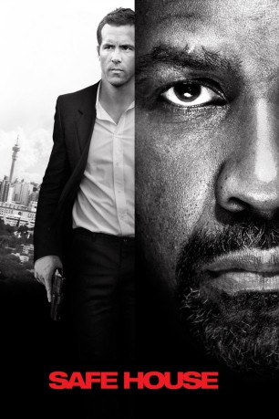
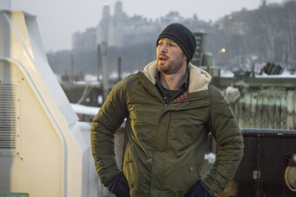
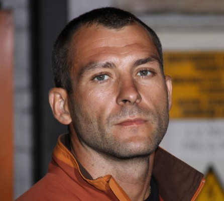
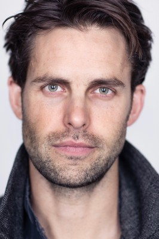
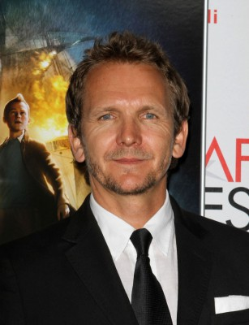

#2884 Safe House
 
 IMDB-Wertung: 6.8 / 10
IMDB-Wertung: 6.8 / 10  Metascore: 52
Metascore: 52 
Agent Matt Weston wurde damit beauftragt, die Insassen des sogenannten Safe House zu betreuen. Hier werden unter anderem Zeugen untergebracht, bevor sie vor Gericht aussagen. Für einen jungen CIA-Agenten also alles andere als aufregend und nicht gerade das, was man sich unter dem Job vorgestellt hat. Das ändert sich allerdings schlagartig, als kein geringerer als Tobin Frost ins Safe House kommt. Frost ist eine ehemaliger CIA-Agent und er war einer der besten. Dann wechselte er die Fronten. Als möglicher Kronzeuge ist er für die Regierung äußerst wertvoll. Das wissen auch Frosts Auftraggeber. Kurzerhand dringen sie ins Safe House ein, und nur kanpp entkommen Weston und Frost. Da die Gangster nur Frost wollen, gilt Weston als entbehrlich. Auf ihrer Flucht und Suche nach einer neuen, sichereren Zuflucht, muss sich Weston wohl oder übel mit Frost verbünden und bekommt dabei mehr Action als ihm lieb ist und Gelegenheit, sich zu beweisen.
Jahr: 2012
Dauer: 114 Minuten
FSK: 16
Land: USA Studio: Universal PicturesTonspuren: DTS - ,
Untertitel: Deutsch,
Auflösung: 1080p (1920x800) Größe: 11161 MB
Genre: Action, Thriller, Krimi, Mystery
Regisseur: Daniel Espinosa
Drehbuch: David Guggenheim
Soundtrack: Ramin Djawadi
Darsteller:
 Denzel Washington als Tobin Frost
Denzel Washington als Tobin Frost Ryan Reynolds als Matt Weston
Ryan Reynolds als Matt Weston Vera Farmiga als Catherine Linklater
Vera Farmiga als Catherine Linklater Brendan Gleeson als David Barlow
Brendan Gleeson als David Barlow Sam Shepard als Harlan Whitford
Sam Shepard als Harlan Whitford Rubén Blades als Carlos Villar
Rubén Blades als Carlos Villar- Nora Arnezeder als Ana Moreau
 Robert Patrick als Daniel Kiefer
Robert Patrick als Daniel Kiefer Liam Cunningham als Alec Wade
Liam Cunningham als Alec Wade Joel Kinnaman als Keller
Joel Kinnaman als Keller Fares Fares als Vargas
Fares Fares als Vargas Stephen Rider als CIA Analyst
Stephen Rider als CIA Analyst- Daniel Fox als CIA Analyst
 Tracie Thoms als CIA Analyst
Tracie Thoms als CIA Analyst Sara Arrington als CIA Analyst
Sara Arrington als CIA Analyst Kenneth Fok als CIA Analyst
Kenneth Fok als CIA Analyst- Nicole Sherwin als Whitford's Assistant
- Allen Irwin als Greer
-  Jake McLaughlin als Miller
- Vernon Willemse als Velez
-  Trayan Milenov-Troy als Vargas Lieutenant
- Roy Taylor als Vargas Lieutenant
 Stephen Bishop als Marine Guard
Stephen Bishop als Marine Guard- Scott Sparrow als Marine Guard
 Fana Mokoena als Officer-in-Charge
Fana Mokoena als Officer-in-Charge- Tilly Powell als Woman Trampled
- Tanit Phoenix als Hostess
 Robert Hobbs als Morgan
Robert Hobbs als Morgan-  Aidan Whytock als CIA Aide - SA
- Geon Nel als CIA Aide - SA
 Sean Cameron Michael als Landlord , uncredited
Sean Cameron Michael als Landlord , uncredited-  Sebastian Roché als Robert Heissler , uncredited
 Stelio Savante als Soccer Stadium Commentator , uncredited
Stelio Savante als Soccer Stadium Commentator , uncredited- Sherry Stone als CIA Analyst , uncredited
- Jenna Dover als CIA Analyst
- Bryan van Niekerk als Linklater's Assistant
- Pope Jerrod als Beck
- Aidan Bennetts als Ericksson
- Dumani Mtya als Vargas Lieutenant
- Thembaletu Tyutu als Vargas Lieutenant
- Oliver Bailey als Vargas Lieutenant
- Boris Martinez als Strip Club Mercenary
- Justin Shaw als Private Security Guard
- Jody Abrahams als Stadium Cop
- Dirk Stoltz als Stadium Cop
- Craig Palm als Stadium Cop
- Craig Hawks als Stadium Cop
- Tyrone Dadd als Stadium Cop
- Lynita Crofford als Reporter at Stadium
- Abdul Ntotera als Businessman
Datei: X:\2012(N-Z)\Safe House (2012, FSK16, 1920x800).mkv seit 29.12.2015
Festplatte: HD 2012(N-Z)-2013(A-H)
 Es gibt insgesamt 138 Filme in der Gruppe '2012(N-Z)'
Es gibt insgesamt 138 Filme in der Gruppe '2012(N-Z)'